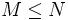
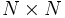

SpatialFilter
User Reference
Contents |
Function
The SpatialFilter computes an instantaneous linear transformation of its input. Typically, the SpatialFilter's input is the unfiltered brain signal from the source module. The linear transformation that is applied by the spatial filter is described by a transformation matrix, and applied for each sample separately, not linking data across different points in time. This linear transformation can be parameterized in three different ways as described below.
Parameters
SpatialFilterType
This parameter defines the method that will be used to design the spatial filter. Choices are:
- 0 None
- No spatial filtering is performed; the input signal is copied to the output signal, and the spatial filter matrix is ignored.
- 1 Full Matrix
- The linear transformation applied to the input signal is defined by the SpatialFilter matrix parameter. This is the is also the default, and matches behavior in previous versions of BCI2000.
- 2 Sparse Matrix
- The sparse matrix filter uses the SpatialFilter matrix parameter to define non-zero matrix entries. Each non-zero entry is given by an input channel, output channel, and weight for that channel.
- 3 Common Average Reference (CAR)
- The common average reference spatial filter calculates the mean of all channels, and subtracts this value from the selected output channels. This filter's output channels may be defined by the SpatialFilterCAROutput parameter.
SpatialFilter
Full Matrix Filter Type
The full matrix filter uses the SpatialFilter parameter to define the linear transformation applied to the filter's input signal. In this matrix, columns represent input channels, and rows represent output channels. Each matrix element defines a weight with which the respective input channel (column) enters into the respective output channel (row).
If the spatial filter is an identity filter -- not modifying its input --, then the SpatialFilter matrix is a unit matrix (square matrix with ones on the main diagonal, and all other elements zero).
In a typical EEG experiment with fixed montage, you might want column labels to reflect the respective electrode location, simplifying the task of further modifications to the spatial filter. Also, specifying row labels to identify output channels allows you to use those labels in configuration of further stages of processing, such as the LinearClassifier.
Sparse Matrix Filter Type
The sparse matrix filter uses the SpatialFilter parameter to define the relationship between input channels and output channels with a given weight. In this case, the SpatialFilter matrix must have 3 columns, and a row for each input/output relationship. The first column contains the input channel, the third column defines the weight that the input channel is multiplied by before being assigned to the output channel, which is defined in the second column.
When specifying input channels in the first column, you may use channel names. In order to assign labels to output channels in sparse representation, use arbitrary labels in the (second) output channel column. You may also re-use input channel labels but you should not do so except when there exists a clear relation between input and output channels with the same name, as it is the case in Laplacian filtering (see below).
In order to allow for re-usability of sparse matrix filter configurations, it is not necessary for all specified input channels to exist in the current configuration. In case of missing input channels, only those output channels will be created for which all input channels exist. This way, it is possible to use the Laplacian configurations at parms/fragments/spatial_filters with only a subset of the channels specified there.
See the example below for more information on how to use the sparse matrix.
SpatialFilterCAROutput
This parameter is a list of channels that define which channels should be output from the common average reference spatial filter, and the order in which they should appear. That is, the location of the channel in this list determines the output channel position. For example, if input channels 6, 7, 10, and 12 should be passed to the output of the spatial filter as channels 3, 4, 1, and 2, then this parameter should be set to:
10 12 6 7
Rather than numbers, channel names may be specified as defined in the ChannelNames parameter:
C3 C4 CP3 CP4 Cz
It is important to note that all channels passed to the spatial filter (typically defined in the TransmitChList parameter) are used in the CAR calculation, but only a subset of these channels are actually output and passed to the next step in the signal processing chain.
If this parameter is left blank, then all input channels are passed to the output, and the number of input channels equals the number of output channels.
SpatialFilterMissingChannels
This parameter determines what happens when the SpatialFilter configuration contains channels that are not present in the input signal. Typically, this should be reported as a configuration error. However, when using pre-defined parameter fragments, it is more appropriate to silently suppress output channels that depend on missing input channels. This parameter provides the following values:
- 0 Ignore
- The configuration is silently adapted to use available channels. Output channels are removed if they depend on a missing input channel.
- 1 Report Error
- There is an error message generated for each channel missing from the input signal. This is the default.
States
None.
Examples
Linked Mastoids (Full Matrix)
Physical reference is to the left mastoid (A1). The right mastoid (A2) is recorded vs A1 on channel 1. All other electrodes are recorded vs A1 as well, and use the remaining channels. In your spatial filter, you will want to re-reference all channels against "linked mastoids", i.e. against the mean of A1 and A2.
In the spatial filter matrix, you want to subtract half of the A2 channel from each of the remaining channels:
| A2 | Fz | Cz | Pz | ... | |
|---|---|---|---|---|---|
| Fz' | -1/2 | 1 | 0 | 0 | ... |
| Cz' | -1/2 | 0 | 1 | 0 | |
| Pz' | -1/2 | 0 | 0 | 1 | |
| ... | |||||
Sparse Matrix
In this example, the mean of channels 1-4 are passed to output channel 1, and the negative mean of channels 10-14 are passed to output channel 2. The SpatialFilter matrix definition is given below.
| In | Out | Wt | |
|---|---|---|---|
| 1 | 1 | 1 | .25 |
| 2 | 2 | 1 | .25 |
| 3 | 3 | 1 | .25 |
| 4 | 4 | 1 | .25 |
| 5 | 10 | 2 | -.2 |
| 6 | 11 | 2 | -.2 |
| 7 | 12 | 2 | -.2 |
| 8 | 13 | 2 | -.2 |
| 9 | 14 | 2 | -.2 |
This results in:
OutCh(1) = 0.25*InCh(1) + 0.25*InCh(2) + 0.25*InCh(3) + 0.25*InCh(4)
OutCh(2) = (-0.2)*InCh(10) + (-0.2)*InCh(11) + (-0.2)*InCh(12) + (-0.2)*InCh(13) + (-0.2)*InCh(14)
Large Laplacian (Sparse Matrix)
In this example, the spatial filter computes Large-Laplacian filtered versions of channels C3 and C4 by re-referencing them to the mean of their mid-range neighbors Cz, P3/4, T7/8, and F3/4:
C3'=C3-(Cz+P3+T7+F3)/4
C4'=C4-(Cz+P4+T8+F4)/4
Using channel names, the filter specification will be independent of the order and exact set of input channels, provided that all required channels are available and labeled correctly.
| In | Out | Wt | |
|---|---|---|---|
| 1 | C3 | C3 | 1 |
| 2 | Cz | C3 | -.25 |
| 3 | P3 | C3 | -.25 |
| 4 | T7 | C3 | -.25 |
| 5 | F3 | C3 | -.25 |
| 6 | C4 | C4 | 1 |
| 7 | Cz | C4 | -.25 |
| 8 | P4 | C4 | -.25 |
| 9 | T8 | C4 | -.25 |
| 10 | F4 | C4 | -.25 |
Note: This subset of a Large Laplacian filter is only provided as an illustration. BCI2000 provides full Small and Large Laplacian filter configurations in parms/fragments/spatial_filters.
Performance Notes
Each spatial filter type uses a different algorithm to compute the linear transformation, and can therefore have implications on CPU load and performance. In the following, N denotes the filter's number of input channels, and  denotes its number of output channels.
None
No computations are actually done, but input data is being copied into the filter's output, resulting in a complexity O(N).
CAR
The common-average reference has a complexity of O(N + M), providing the next best performance in most circumstances. It is possible to create a CAR using either the full-matrix or sparse matrix options; however, the CAR method only calculates the mean value once per sample, and subtracts it only from the selected output channels. In order to implement a CAR in a full-matrix, the mean must be recalculated for every output channel, which is not as efficient, particularly for high channel count systems.
Sparse Matrix
The sparse matrix method performance is determined completely by the number of elements (rows) in the SpatialFilter matrix. In the best case, a single channel is multiplied by the weight and assigned to the specified output channel; this would take far less CPU time than the CAR method, and possibly the "none" option as well.
In a realistic scenario, all N input channels will be used to calculate output channels; thus, complexity is between O(N) and O(N * M), with O(N2) in the worst case.
Sparse matrix worst-case performance will be close to that of an  "full" spatial filter matrix. Thus, for spatial filter configurations that depend on electrode/sensor locations such as Laplacian filtering, filter definition in terms of a sparse matrix using channel labels appears most advantageous.
Full Matrix
Full matrix representation is the most general way to specify a spatial filter, and recommended for situations not allowed for by the remaining spatial filter types. Compared to those, it is associated with a number of disadvantages:
- Complexity of matrix-vector multiplication is O(NM). In situations with large sampling rates and/or a large number of channels, this may result in real-time problems due to high CPU load.
- Channel labels are not preserved across the filter. Due to the filter's general nature, no relation between input and output channel names can be inferred, and all output labels must be specified manually.
- The filter's specification depends on the order of input channels, which makes it interdependent with the TransmitChList parameter.
- On multiprocessor systems, computation of a full-matrix type spatial filter is performed by multiple threads, one per processor core, such that the system's multiprocessing capability is fully utilized.
See also
User Reference:LinearClassifier, User Reference:DataIOFilter#ChannelNames
![[BCI2000 Help]](../../images/bci2000logo_small.png)
{kind=link}